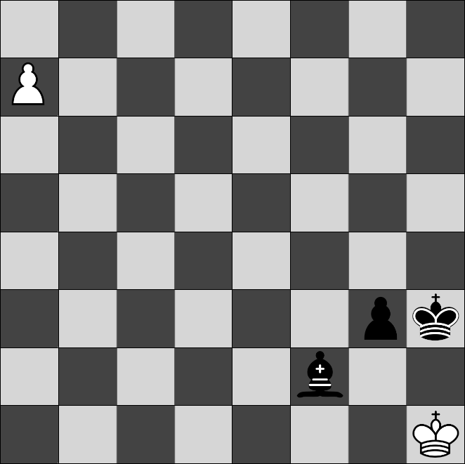

Exercici 03_08. Puzle d’escacs¶
Exercici 03_08. Puzle d’escacs¶
Context
Carpeta de lliurament:
03_08_puzles/Continguts relacionats: Gestió de fitxers en Java
Com lliurar-lo: instruccions
Enunciat
Al món dels escacs hi ha molts subjocs a banda de fer una partida entre dos persones.
Un d’ells és analitzar posicions concretes de partides, sovint dels grans jugadors, amb reptes de l’estil: «les negres juguen i mat en 1».
{kind=link}
A aquest tipus de jocs sovint se’ls coneix com a puzles d’escacs
Pots aconseguir centenars d’exemples de puzles amb una simple cerca com aquesta
A aquest exercici desenvoluparem un gestor de composicions de taulells d’escacs que corresponen a puzles.
El gestor oferirà la possibilitat de:
llistar els puzles
mostrar un puzle a partir del seu nom
afegir un puzle buit
duplicar un puzle
eliminar un puzle
afegir una figura a un puzle
moure una figura d’un puzle
eliminar una figura d’un puzle
Emmagatzemament de puzle¶
Cada puzle s’emmagatzema a un fitxer de text.
El nom del fitxer tindrà la següent plantilla: puzle_«nom».txt
El «nom» correspon al nom del puzle.
Per exemple, puzle_negres_mate_en_un.txt té com a nom del puzle
"negres_mate_en_un".
El contingut d’un puzle són vuit línies de 8 caràcters (més el salt de línia) cadascuna, que representarà les files del taulell, començant per la darrera línia (la fila 7 si comencem a comptar des de zero).
El contingut del fitxer puzle_negres_mate_en_un.txt serà:
$ cat puzle_negres_mate_en_un.txt
········
p·······
········
········
········
······PR
·····A··
·······r
Un nom de puzle vàlid no pot ser buit i només podrà contenir lletres,
números i el caràcter de subratllat '_'. D’aquesta manera ens
assegurarem que pot correspondre a un nom de fitxer vàlid.
Funcionament del programa¶
El programa de gestió de puzles funcionarà com un entorn operatiu que
mostrarà el prompt puzle> i acceptarà les següents comandes:
help: ajuda sobre les comandes disponiblesquit: sortir de l’entorn operatiuls: llistar els puzlesshow: mostrar un puzle a partir del seu nomnew: afegir un puzle buitcp: duplicar un puzlerm: eliminar un puzleadd: afegir una figura a un puzlemv: moure una figura d’un puzledel: eliminar una figura d’un puzle
Cada cop que s’executi una comanda amb èxit, els fitxers afectats quedaran tancats. És a dir, els fitxers s’aniran obrint i tancant a mesura que siguin requerits i no es mantindràn oberts entre comandes. De fet, ni tant sols en espera de confirmació.
Les comandes distingiran majúscules i minúscules.
El programa mirarà de minimitzar les possibilitats de finalitzar per una excepció amb els fitxers o bé amb una posició fora de rang. Això ho farà comprovant sempre l’existència dels fitxers a llegir/escriure i que les coordinades siguin vàlides.
Desenvolupament¶
Realitzaràs el desenvolupament d’aquest programa de manera incremental, a partir dels següents exercicis:
Per ajudar-te en el desenvolupament, he dividit l’exercici en una sèrie de subexercicis que, donat que disposen de tests exclusius per cada funcionalitat, et permetran anar desenvolupant pas a pas sense barrejar amb la resta.
Finalment, assegura’t que lliures la versió completa a la carpeta corresponent a aquest exercici, tot passant totes les proves.
 Exercici 03_09. Puzle d’escacs: entorn operatiu
Exercici 03_09. Puzle d’escacs: entorn operatiu
Exercici 03_10. Puzle d’escacs: llista
 Exercici 03_11. Puzle d’escacs: mostra
Exercici 03_11. Puzle d’escacs: mostra
Exercici 03_12. Puzle d’escacs: nou puzle
Exercici 03_13. Puzle d’escacs: duplica puzle
Exercici 03_14. Puzle d’escacs: elimina
Exercici 03_15. Puzle d’escacs: afegeix figura
Ampliacions¶
En cas que t’hagis quedat amb ganes de més, hi ha moltes ampliacions que hi pots fer. Les més interessants per aquest tema són les que et permeten experimentar amb els fitxers. En concret et proposo les següents:
guardem tot el contingut en una única línia (sense salts de línia)
guardem només les figures que hi ha al taulell
Pel puzle d’exemple, guardaria simplement:
07r15A26P27R60pFixa’t que només li cal indicar que a les coordenades 0, 7 es troba el rey blanc, i que no cal ni separar cada figura doncs sabem que cada entrada ocupa exàctament tres caràcters.
Ens tocarà fer un conversor entre arrays i aquest format i viceversa.
Variants d’aquesta n’hi ha moltes. Per exemple, podríem fer servir una marca de línia per cada fila i només indicar les columnes. Al nostre exemple, considerant la
Xcom a màrca de línia, el fitxer contindria:7rX5AX6P7RXXXX0pXformat binari
Fixa’t que només ens calen 13 valors per representar les diferents figures (això són 4 bits i ens sobren!) Així, amb 4 bytes podríem codificar tota una fila i amb 8 tot un taulell.
En cas que t’animis a fer aquesta ampliació, et caldrà descobrir els operadors bitwise
Amb un byte per figura al taulell en podríem tenir prou: 3 bits per coordenada més els 4 per la figura.o
Ni ens caldria un valor per la casella buida!
Compacte és aquest, oi?
En cas que t’animis a fer una d’aquestes ampliacions, pensa que no et passaran algunes de les proves de la versió bàsica. Per tant, et proposo que les facis en una carpeta a banda i, per favor, si te’n surts, fes-m’ho saber perquè li faci una ullada.